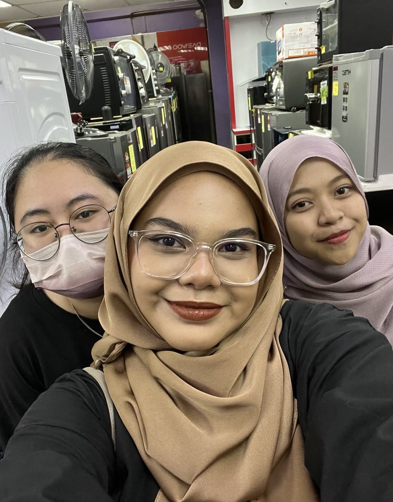
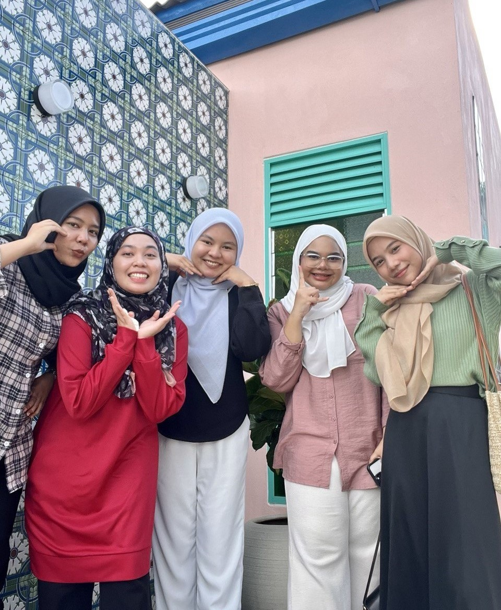
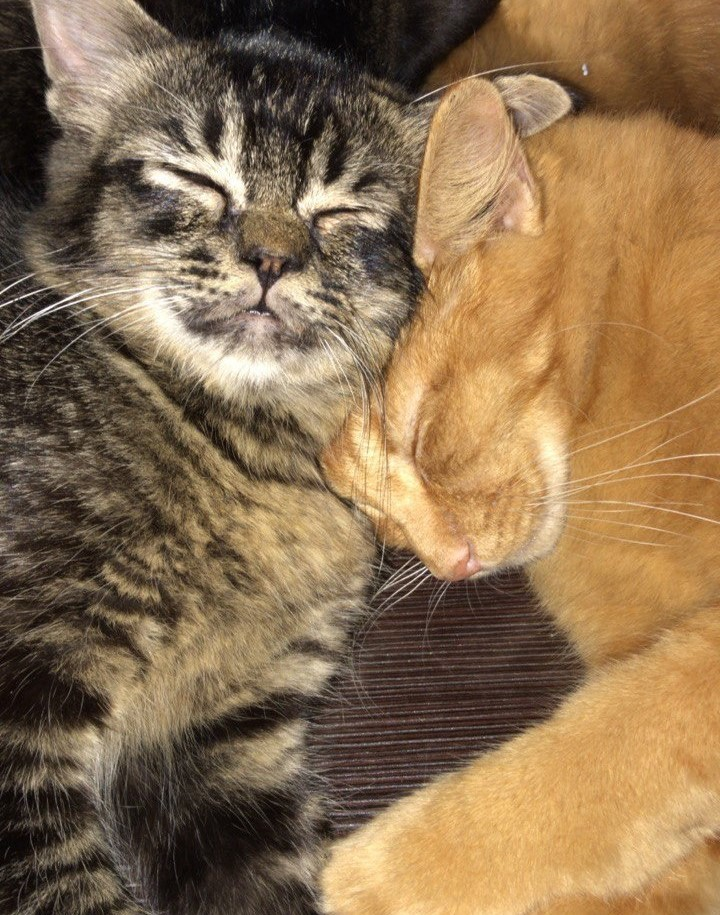

☰ Menu
You're Like A Sun to My Moon

My Sunshine
Ninie Tor and Zuwairiyyah are my most precious buddies. Our friendship has been more than 10 years already. It feels like only yesterday we meet and greet each other. I'm so grateful that each one of us would reach out our hands whenever we want to escape from the reality. I hope that we are able to spend time together sooner or later!

Beloved Friends
They are my friends in UiTM Kedah named as Nursyiffa Rozana, Fairuz Zulaikha, Nur Athirah and Nur Fatihah Syuhada. You can see us going here and there stick together like a glue. Since all of us stay in the college, we usually plan for outing during the weekend in order to release our stress. But, then we will got all stress again since we spent too much money during the outing.

My Furry Buddies
People usually call them as a pet. However, for me, from the moment I find or adopt them, I saw them as friends or family. The black one is called as Han while the ginger one is Booyen. They are the one who always keep me company when I'm doing my assignment and so on. They are also the most spoiled friends I have ever had but I'm not complaining.
|